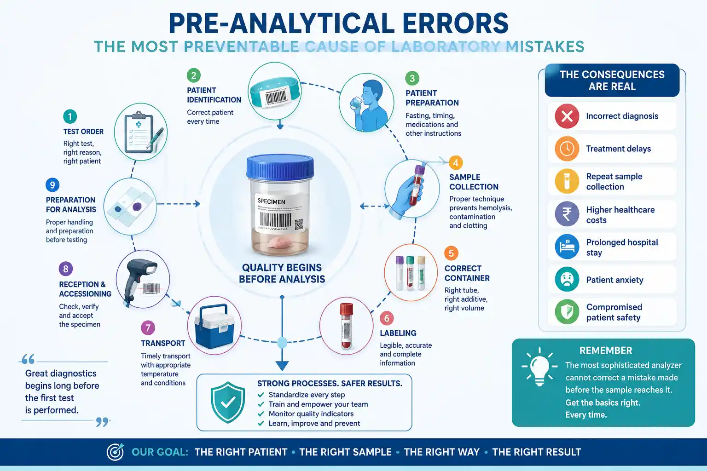
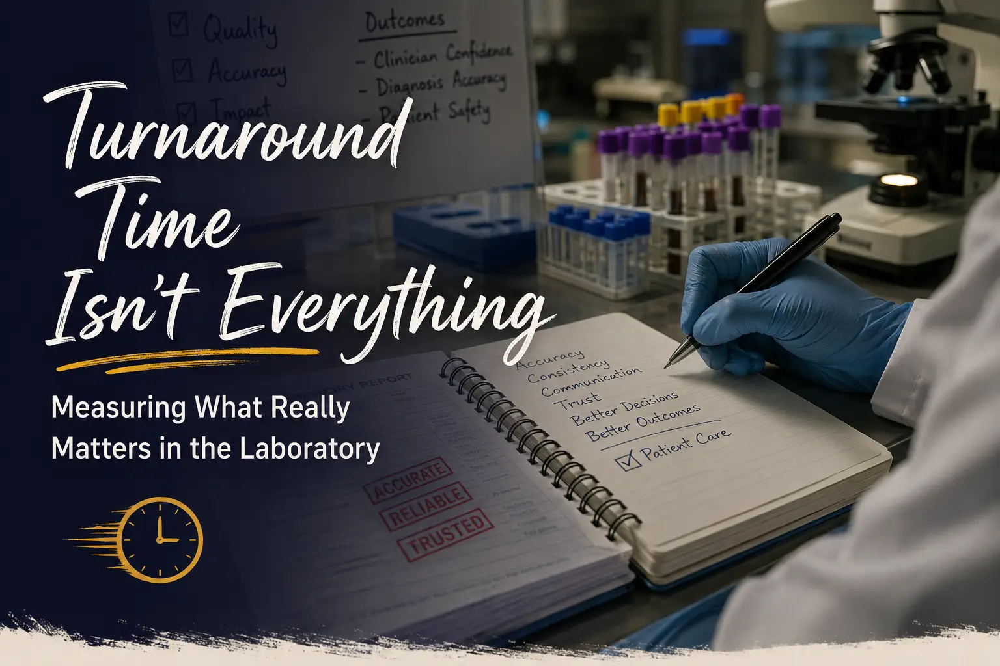
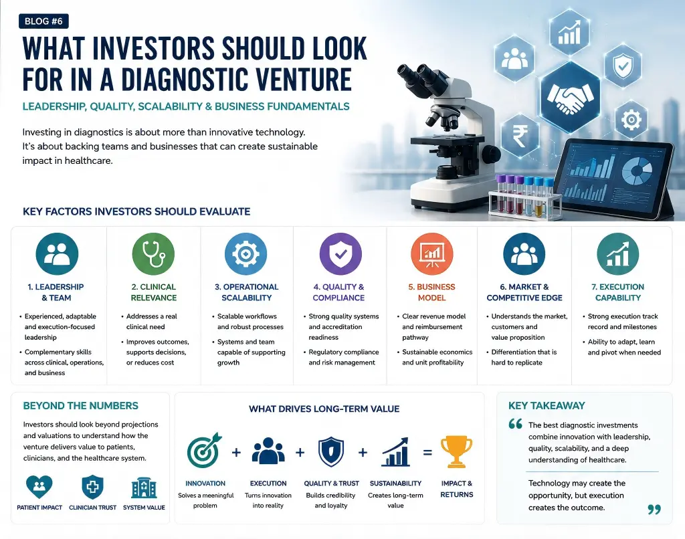
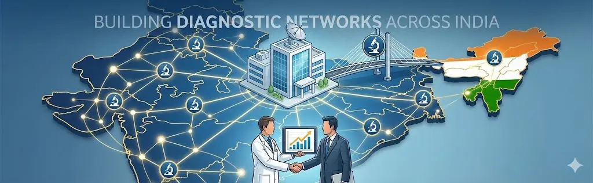

Blog
Perspectives from three decades of building, scaling, and leading diagnostic operations.
What's New
Healthy Aging Starts Today: Preventing Osteoporosis Through Early Detection
Osteoporosis is often called the silent disease — it weakens bones without symptoms until a fracture occurs. Laboratory medicine plays a key role in early detection and prevention.
Dr. Arpan Gandhi Joins SteerX as a Diagnostics & Healthcare Strategy Expert
A new advisory role at SteerX — bringing nearly three decades of diagnostic leadership, laboratory transformation, and healthcare strategy expertise to the platform.
At the Intersection of AI and Medicine
Reflections from the Health to the Power of AI Conclave 2026 in Bengaluru — three perspectives as Panelist, Strategic Advisor, and Delegate at a landmark gathering of healthcare and technology leaders.
Happy Doctors' Day
Thirty years ago, I walked into medicine with an unwavering belief that every diagnosis could change a life. Reflecting on three decades of purpose, gratitude, and the journey ahead.
Here's What I've Been Working On Recently…
Advancing conversations around diagnostic leadership, healthcare innovation, and laboratory transformation — through writing, speaking, mentoring, and strategic collaboration.
Technical Blog

Precision Medicine: Treating the Right Patient with the Right Therapy
Precision medicine is moving healthcare beyond one-size-fits-all treatment — integrating genomics, molecular diagnostics, and clinical wisdom to deliver the right therapy to the right patient at the right time.
The Science Behind Turnaround Time
Turnaround time begins the moment a test is ordered and spans every stage of the diagnostic pathway. Understanding its components is what separates consistently excellent laboratories from the rest.

Pre-analytical Errors: The Most Preventable Cause of Laboratory Mistakes
Nearly 60–70% of laboratory errors occur before a specimen reaches the bench. The most advanced analyser cannot rescue a sample whose quality was lost before it arrived.
Why Great Healthcare Begins Long Before Treatment Starts
Great healthcare doesn't begin when treatment starts — it begins with the confidence that the diagnosis is right. And that confidence is built every day inside high-quality laboratories.

Turnaround Time Isn't Everything: Measuring What Really Matters in the Laboratory
A report delivered an hour earlier has little value if it cannot be trusted. The best laboratories don't aim to be the fastest — they aim to be the most trusted.
Why Technology Alone Cannot Transform Healthcare
Technology is reshaping healthcare — but lasting transformation depends on strong leadership, clear vision, and a culture ready to embrace change. The tools are available to almost everyone. What sets organisations apart is the quality of their people.

Why Most Diagnostic Startups Fail: Lessons for Founders and Investors
The diagnostics sector has never been more exciting — yet many startups still fail. The reason is rarely a lack of innovation. More often, it is an imbalance between technology, execution, quality, and business fundamentals.

What I Learned Building Diagnostic Networks Across India
Over three decades in diagnostic laboratory medicine, I have had the privilege of working with standalone laboratories, large corporate diagnostic chains, and hospital-based services across India.
From Technician to Leader: Career Pathways in Laboratory Medicine
Laboratory medicine is often seen as purely technical. Behind every accurate report stands a technician, scientist, or pathologist whose growth defines the quality of diagnostics.
Why Diagnostic Labs Need Leaders, Not Just Managers
In the last three decades, diagnostic laboratories in India have undergone a remarkable transformation. What began as small standalone facilities has evolved into large corporate networks.
Technical Blog
01 Precision Medicine: Treating the Right Patient with the Right Therapy 02 The Science Behind Turnaround Time 03 Pre-analytical Errors: The Most Preventable Cause of Laboratory Mistakes 04 Why Great Healthcare Begins Long Before Treatment Starts 05 Turnaround Time Isn't Everything: Measuring What Really Matters in the Laboratory 06 Why Technology Alone Cannot Transform Healthcare 07 Why Most Diagnostic Startups Fail: Lessons for Founders and Investors 08 What I Learned Building Diagnostic Networks Across India 09 From Technician to Leader: Career Pathways in Laboratory Medicine 10 Why Diagnostic Labs Need Leaders, Not Just Managers